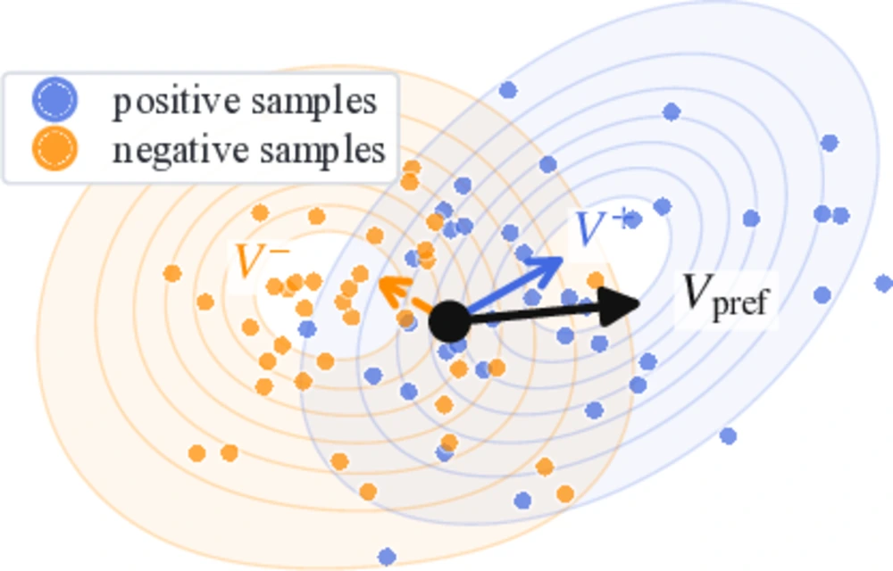
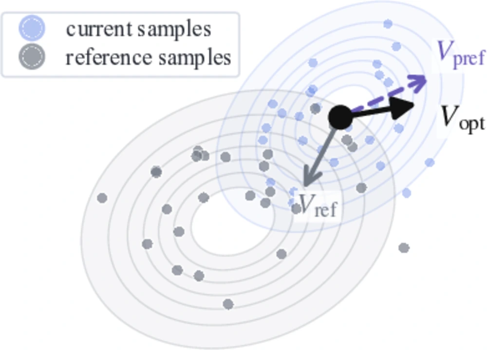
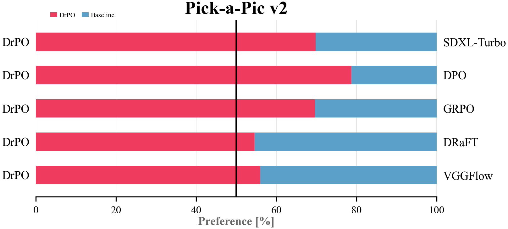
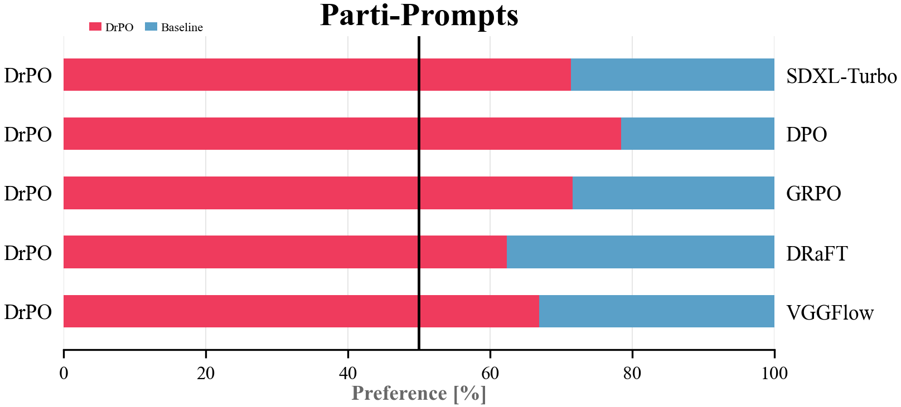
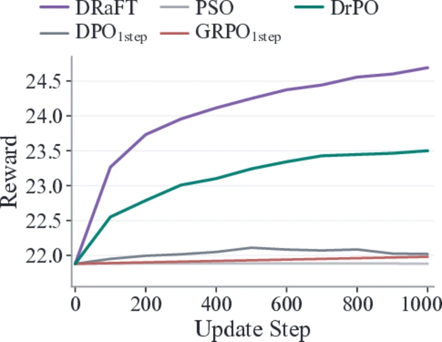
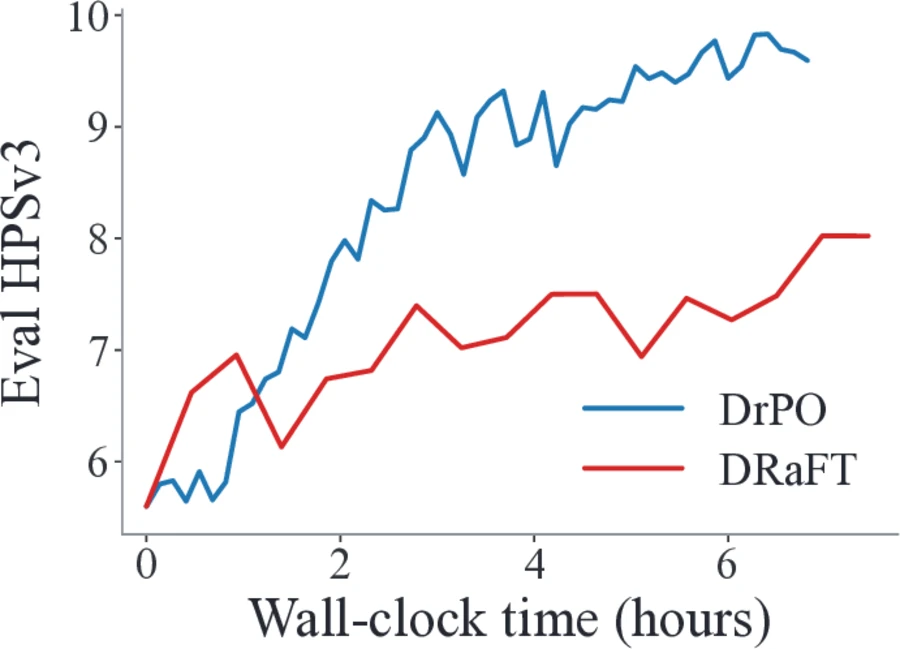
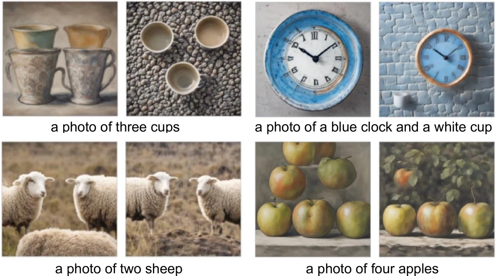
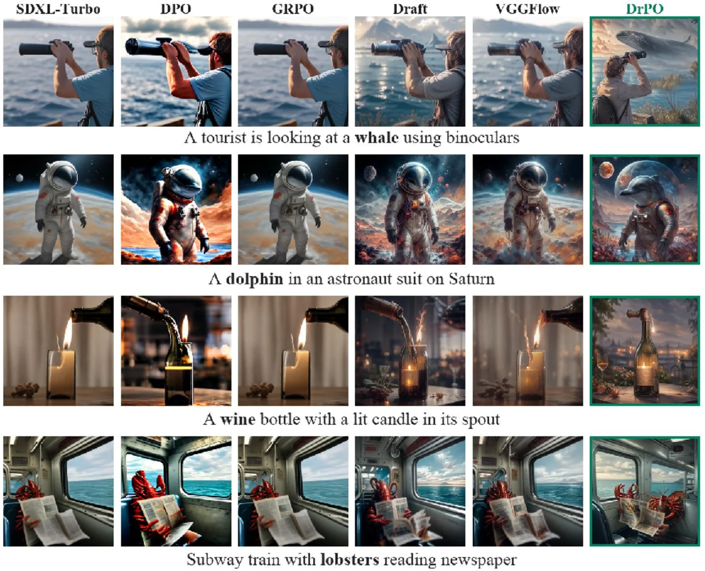
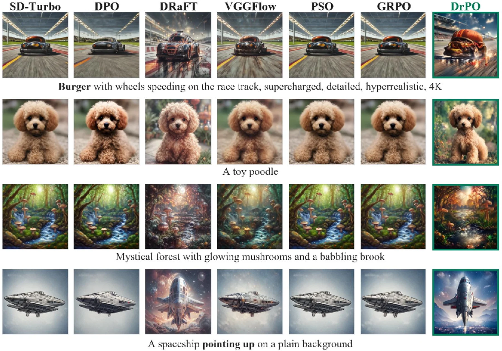
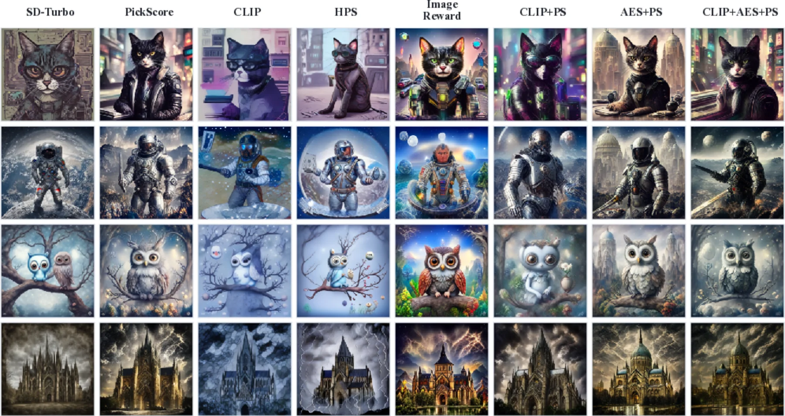

Paper Project Page
Drifting Preference Optimization for One-Step Generative Models
Online preference finetuning for deterministic one-step text-to-image generators using reward-ranked samples, dipole preference fields, and reference drift.
1Westlake University 2The Chinese University of Hong Kong, Shenzhen
Abstract
Preference optimization without likelihoods, denoising trajectories, or reward backpropagation.
One-step text-to-image generators are attractive for deployment because they generate an image with a single forward pass, but preference finetuning them remains difficult. DrPO is an online preference-finetuning method for deterministic one-step generators. For each prompt, DrPO samples candidates from the current generator, ranks them with a target reward, and uses high- and low-scoring samples to synthesize a feature-space update direction. The update combines a non-parametric dipole preference field with a reference drift estimated from the frozen base generator, and is optimized through a detached feature-space regression target. The target reward is used only for ranking, so DrPO can train with large, black-box, or non-differentiable rewards while inference remains a single generator call.
Method
Dipole preference drift plus reference correction.
Generate on-policy candidates
For each prompt, DrPO samples a candidate set from the current one-step generator under different latent seeds.
Rank with the target reward
The reward model selects positive and negative supports. It does not need to be differentiable through the generated image.
Train toward a detached target
Preference and reference fields define a feature-space target, and LoRA parameters are optimized with a regression loss.


Results
DrPO gives the largest reward-gradient-free gains among one-step preference baselines.
| Method | Steps | Reward grad. | Pick-a-Pic v2 Test | Parti-Prompts | ||||
|---|---|---|---|---|---|---|---|---|
| PS | AES | IR | PS | AES | IR | |||
| SDXL base | 50 | - | 22.15 | 6.104 | 6.85 | 22.64 | 5.761 | 7.24 |
| SDXL-DPO | 50 | - | 22.57 | 6.076 | 9.38 | 22.95 | 5.811 | 10.66 |
| SDXL-Turbo base | 1 | - | 22.45 | 6.059 | 9.36 | 22.77 | 5.693 | 9.13 |
| DRaFT | 1 | Yes | 24.45 | 6.712 | 12.70 | 24.34 | 6.485 | 12.66 |
| VGGFlow | 1 | Yes | 24.27 | 6.490 | 12.19 | 23.98 | 6.200 | 11.40 |
| DPO1step | 1 | No | 22.77 | 6.227 | 10.44 | 22.85 | 6.019 | 11.25 |
| PSO | 1 | No | 22.56 | 6.092 | 8.97 | 22.87 | 5.744 | 9.17 |
| GRPO1step | 1 | No | 22.50 | 6.077 | 9.57 | 22.80 | 5.710 | 9.27 |
| DrPO | 1 | No | 23.66 | 6.717 | 12.46 | 23.71 | 6.665 | 12.60 |
SDXL-Turbo main result
DrPO improves SDXL-Turbo from 22.45 to 23.66 PickScore, 6.059 to 6.717 AES, and 9.36 to 12.46 ImageReward on Pick-a-Pic v2.
SD-Turbo generalization
The same arxiv table set reports SD-Turbo gains from 21.88 to 23.49 PickScore and from 5.75 to 9.54 ImageReward on Pick-a-Pic v2.
Large reward models
With HPSv3, DrPO removes reward-model backpropagation and reduces matched-batch update time from 21.62s to 6.17s.





Qualitative
Matched-prompt comparisons and reward-model ablations.



Code
Reproduce the released training recipes.
The repository contains compact SDXL-Turbo DrPO trainers, SD-Turbo baselines, PickScore prompt splits, sampling utilities, and model asset checks.
git clone https://github.com/UGVly/DrPO.git
cd DrPO
conda env create -f environment.yml
conda activate drpo
pip install -e .python scripts/check_local_assets.py
bash scripts/train/sdxl_turbo_drpo_teacher.sh
bash scripts/train/sdxl_turbo_drpo_mae.sh
bash scripts/train/draft.sh